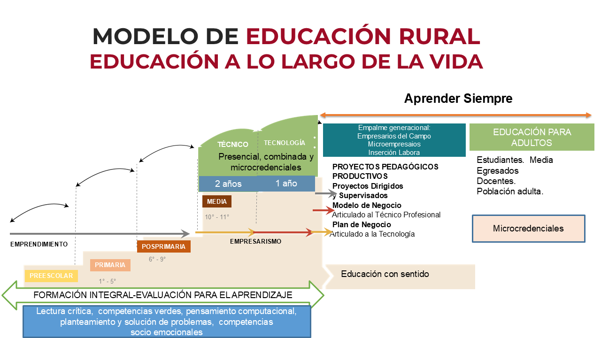

Área de Educación
Área de Educación
Educación para la Competitividad
.png)
El marco pedagógico que estas decisiones buscan fortalecer.

La evidencia convierte la información en argumentos para decidir mejor.
Cómo transformamos datos, informes y experiencia en decisiones que mejoran la educación rural de Caldas.
¿Qué es la evidencia?
Información confiable, pertinente y verificable que permite comprender una situación, valorar alternativas y sustentar decisiones con argumentos.
Reduce la incertidumbre y evita que las decisiones dependan solo de percepciones, intuiciones o supuestos.
Tres miradas, un mismo camino
Ayuda a interpretar los problemas y el contexto en que ocurren.
Permite comparar alternativas frente a la incertidumbre.
Tiene sentido cuando se convierte en acción y en mejora real.
¿Cómo reconocemos una decisión basada en evidencia?
Se sustenta en datos, información y conocimiento disponible.
Responde realmente al problema o situación que se quiere abordar.
Considera el territorio, las personas, la organización y las circunstancias.
Implica recoger, organizar y analizar información de manera ordenada.
No acepta cualquier información como válida: valora su calidad y posibles sesgos.
Integra diferentes perspectivas y conocimientos de los actores involucrados.
La evidencia no se queda en el análisis: sirve para decidir y actuar.
Permite revisar después los resultados de la decisión y aprender de ellos.
Un ciclo, no un paso único
Decidir con evidencia no significa decidir únicamente con datos; significa integrar evidencia, contexto, experiencia y juicio profesional para tomar decisiones más pertinentes.
Con qué evidencia contamos hoy
Cultura del emprendimiento y la empresarialidad
Parte de la trayectoria educativa: formar personas que también saben crear oportunidades.
Cultura del emprendimiento
Actitudes emprendedoras
- Creatividad
- Innovación
- Liderazgo
- Pensamiento flexible
- Trabajo en equipo
- Identificación de oportunidades
- Capacidad para asumir riesgos
Empresarialidad
- Generación de ideas
- Conocimiento del mercado
- Finanzas
- Gestión gerencial
- Plan de negocio
- Gestión de recursos
- Negociación
- Generación de valor
Los jóvenes rurales construyen su futuro en el campo
- Los ingresos de los jóvenes representan en promedio el 54,4% de los ingresos totales del hogar
- El arraigo de los jóvenes al campo aporta a una visión renovada del campo
- Motivación por trabajar en actividades relacionadas con el campo (88%)
- Aspiran vincularse a la institucionalidad cafetera (75,5%)
- Satisfacción en su economía, confianza en sus capacidades e integración familiar
- El conocimiento de los jóvenes mejora la productividad en las fincas de sus padres
- La mayoría de los egresados aspira a tener su propio negocio rural en el futuro
- La visión positiva de los padres sobre las capacidades de sus hijos favorece la permanencia en el campo
Gracias.
Área de Educación · Panamá, 2026